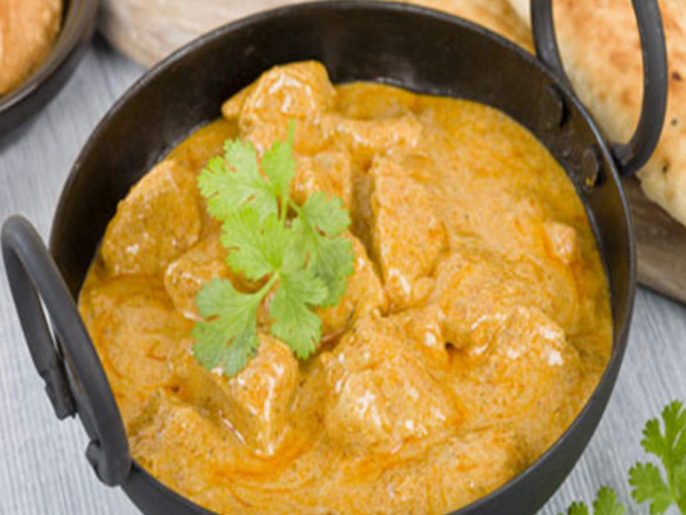

Korma Style Chicken

Fragrant and Tender Chicken in a creamy sauce.
This chicken recipe takes inspiration in an Indian classic dish, Chicken Korma.
It's rich sauce offers a complexity of well balanced flavors.
Ingredients
- Chicken Breasts
- Onion
- Garlic
- Yogurt
- THe Spice Mix
- oil
Instructions
- Sautee the onion until dark brown and remove from pan
- Add more oil, and place the garlic, and chicken
- Cook the chicken on both sides
- In a bowl mix the spices with the yogurt
- Add the yogurt mix to the chicken
- Stir for 5 minutes
- Garnish with fresh cilantro, and serve with Basmati rice